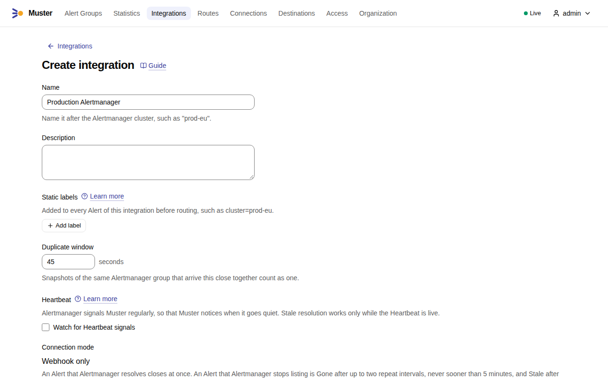
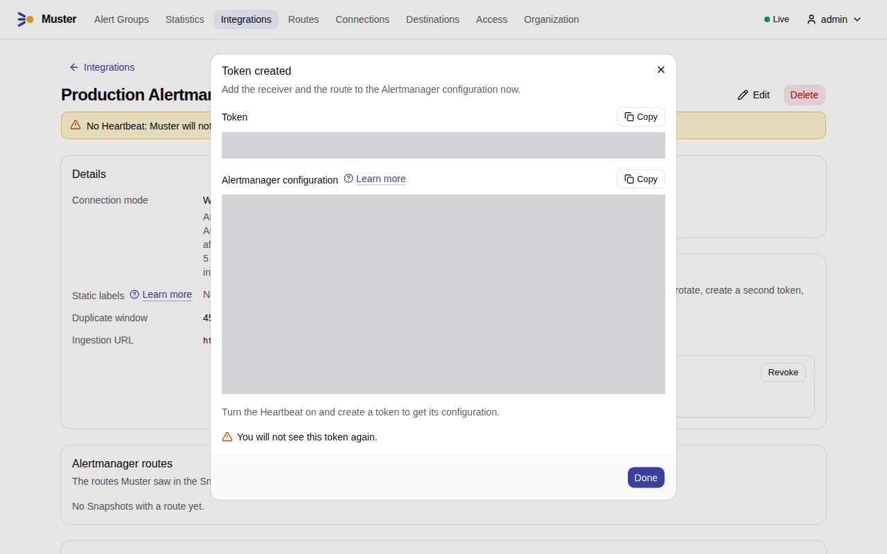
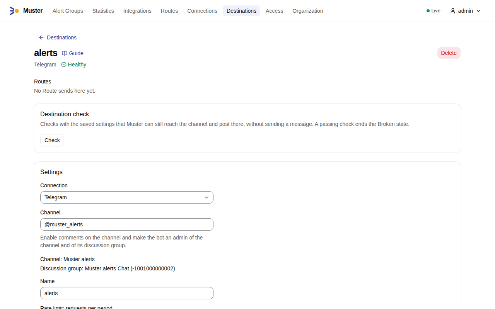
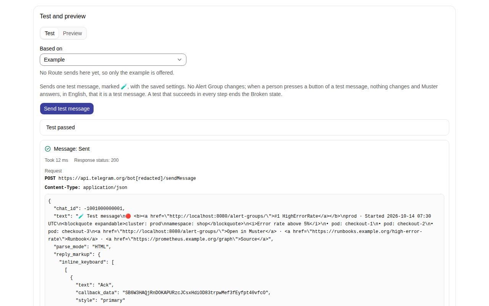
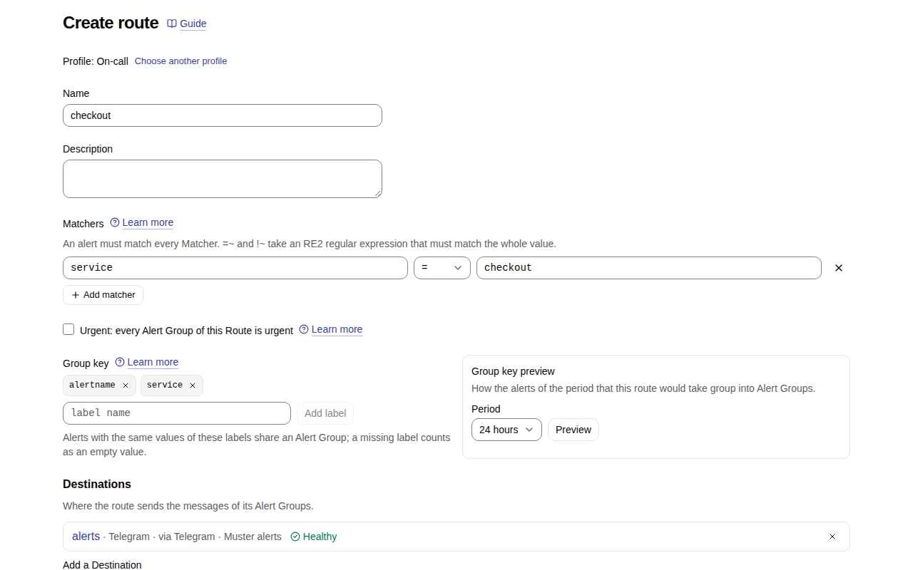
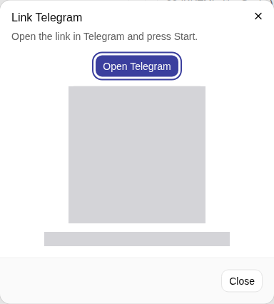
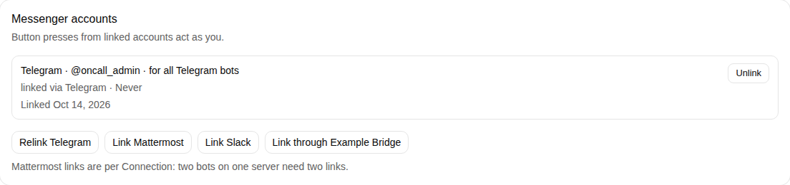
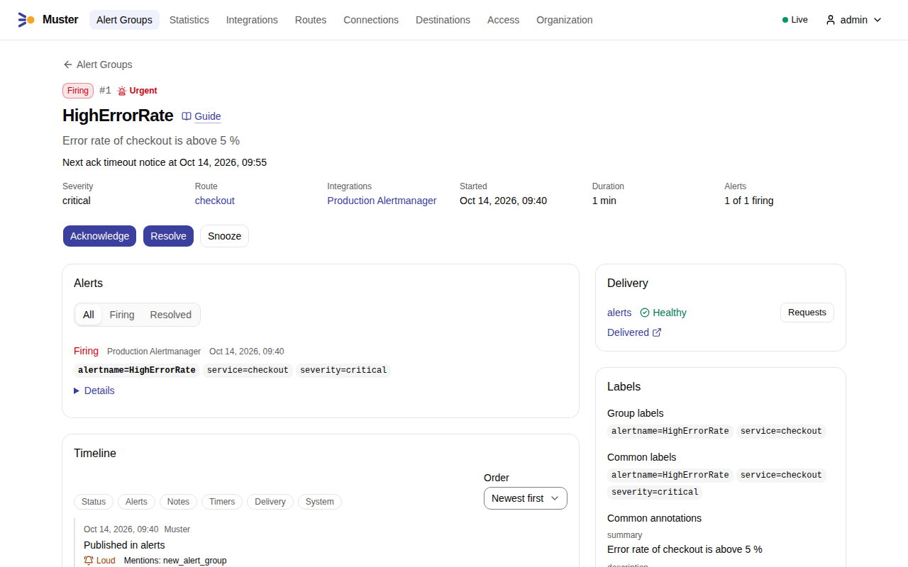
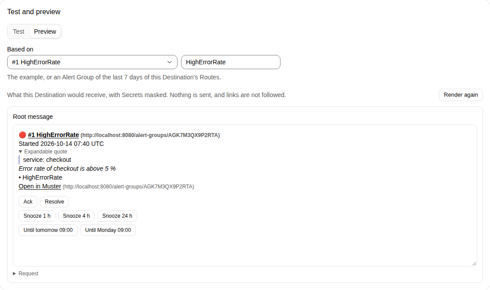
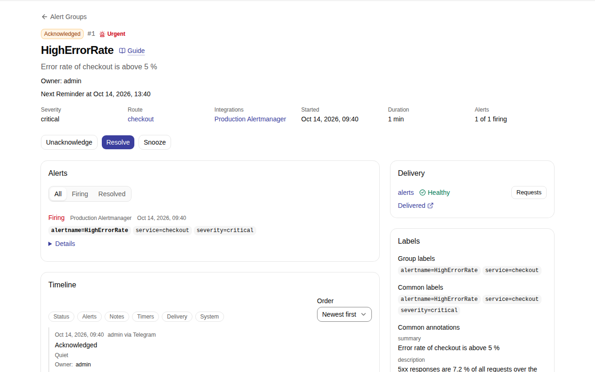

First alert in a messenger¶
This tutorial takes one alert from Alertmanager to a Telegram channel and back: you connect Alertmanager, connect a Telegram bot, send Alert Groups of one service to a channel, and acknowledge the Alert Group from Telegram. It starts where Quick start ends: Muster runs and you are signed in as the Admin. It takes about fifteen minutes.
Telegram needs no address of Muster that Telegram can reach: Muster asks Telegram for updates itself. Before you start, in Telegram:
- create a bot with @BotFather and copy its token, as Create the bot describes;
- create a channel for the alerts, enable comments on it, and make the bot an admin of the channel and of its discussion group, as Enable comments on the channel and Make the bot an admin describe.
The screenshots show the channel @muster_alerts and the bot @muster_dev_b_bot; yours have your names.
1. Create the Integration¶
An Integration is the way one Alertmanager sends to Muster. Open Integrations, select Create integration,
name it after your Alertmanager, such as Production Alertmanager, and select Create.

On the Integration's page, under Tokens, select Create token, name it, such as alertmanager, and select
Create. The dialog shows the Token and the Alertmanager configuration once; copy both before you select
Done. Add the configuration to your Alertmanager and reload it. In the screenshot both are hidden.

Connect Alertmanager explains every line of the configuration.
2. Connect Telegram¶
A Connection holds the credentials Muster uses to talk to a messenger, here a Telegram bot. Open Connections, select Create connection and choose
Telegram. Enter a Name, such as Telegram, select Set a value next to Bot token and paste the bot's
token. Keep the Bot API base URL https://api.telegram.org and the Update mode Long polling.
Select Check connection. The check runs in three steps against the values in the form and saves nothing; it names the bot when they pass. Then select Save.

Connect Telegram explains each field and each step of the check.
3. Add a Destination¶
A Destination is the channel Muster posts to. Open Destinations, select Create destination and choose
Telegram. Choose the Connection of step 2, enter the Channel as @username, or its chat id for a private
channel, give it a Name, such as alerts, and select Save. Saving runs the Destination check: the bot is
an admin of the channel and of its discussion group. The saved Destination shows the discussion group it found.

Under Test and preview, on the tab Test, select Send test message. A message marked 🧪 appears in the
channel, and the result shows the request Muster sent, with the bot token hidden. Links in the screenshots start with
http://localhost:8080, the address of a development installation; yours start with your MUSTER_PUBLIC_URL.

Connect Telegram lists what the Destination check needs and what it says when it fails.
4. Send Alert Groups to the Destination¶
A Route picks Alerts by their labels and decides where their Alert Groups go. Alerts that no other Route takes go
to the Default route, which has no Destination yet. Open Routes, select Create route and choose the profile
On-call. Name the Route checkout and select Add matcher: the label service, =, the value checkout. In
Group key, remove severity and cluster and add service, so that each alert name of each service is one Alert
Group. Under Destinations, choose alerts in Add a Destination, then select Create.

Routes and Group keys explains Matchers, Group keys and the order of the Routes.
5. Link your Telegram account¶
A button in Telegram acts as a Muster User only through an Account link. Open your profile from the user menu and, under Messenger accounts, select Link Telegram. With more than one Telegram Connection, choose the one of step 2 and select Get link. Select Open Telegram, or scan the QR code with your phone, and press Start in the chat with the bot. The link works once and expires after a few minutes; in the screenshot the code and the time are hidden.

The dialog closes once the bot has linked your account, and your profile shows it.

Link your messenger accounts explains the other messengers.
6. Send a test alert¶
Send an alert of the service checkout, as Alertmanager would send it, with the request of
Quick start and the token of step 1 in TOKEN:
TOKEN=mstr_int_...
curl -sS -o /dev/null -w '%{http_code}\n' http://localhost:8080/api/v1/ingest \
-H "Authorization: Bearer $TOKEN" -H 'Content-Type: application/json' --data-binary @- <<EOF
{
"version": "4",
"groupKey": "{}:{alertname=\"HighErrorRate\"}",
"status": "firing",
"receiver": "muster-prod-eu",
"groupLabels": {"alertname": "HighErrorRate"},
"commonLabels": {"alertname": "HighErrorRate", "service": "checkout", "severity": "critical"},
"commonAnnotations": {"summary": "Error rate of checkout is above 5 %"},
"externalURL": "http://localhost:9093",
"alerts": [
{
"status": "firing",
"labels": {"alertname": "HighErrorRate", "service": "checkout", "severity": "critical"},
"annotations": {"summary": "Error rate of checkout is above 5 %"},
"startsAt": "$(date -u +%Y-%m-%dT%H:%M:%SZ)",
"endsAt": "0001-01-01T00:00:00Z"
}
]
}
EOF
Muster answers 202. Open Alert Groups: the Alert Group HighErrorRate is there, Firing, on the Route
checkout. Its page shows the Alert, its labels, its delivery to alerts and its Timeline.

At the same moment the bot posts its Root message in the channel: the status, the title, the labels and the buttons. The Destination's Preview, based on the Alert Group, shows that message as Telegram draws it.

Alert Groups explains how Alerts become Alert Groups.
7. Acknowledge it in Telegram¶
In the channel, press Ack under the Root message. Telegram shows "Done: Acknowledge", the message changes to Acknowledged, and the Alert Group's page names you as its Owner. Its Timeline records that you acknowledged it through Telegram.

Statuses and commands lists what each button does.
Next steps¶
Mattermost, Slack and Bridges differ only in steps 2, 3 and 5:
- Mattermost: create the Connection with the server's address and
a bot token, add a Destination for a channel the bot is a member of, and
link the account with a code the bot sends. Mattermost calls Muster for
button presses, so it must reach
MUSTER_INGEST_URL. - Slack: create the app and the Connection, invite the bot and create Destinations, and link the account. In Socket Mode, Slack needs no address of Muster.
- Any other messenger through a Bridge, with a Destination for each channel.
Then set the time zone of the Organization, change what messages say, and watch the path from Alertmanager with a Heartbeat.